Forest: A time banking app for college students
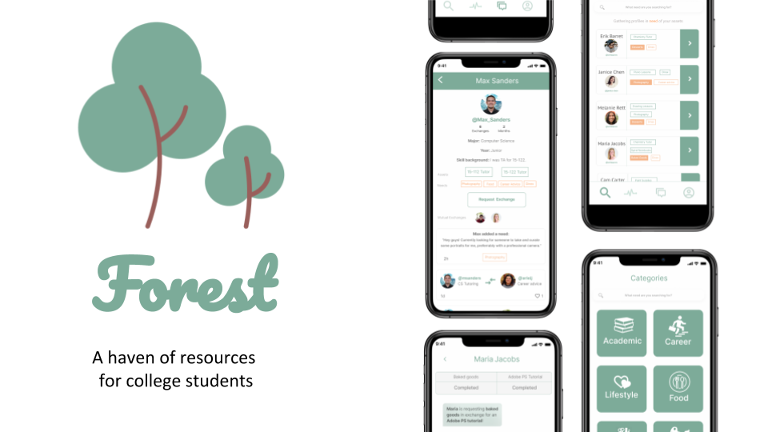 Wireframes Process BookDomain Selection
As a part of a project for the Interaction Design Overview class at CMU, our group tackled the challenge of creating an app for a domain of our choice. We selected time baking as our domain because it poses interesting challenges from a design perspective, and could be incredibly useful in many different communities.
- A diverse community, with a variety of resources and needs
- Pre-established trusts
- Common goals among community members
After analyzing all of these factors, we set out to conduct user research to determine an ideal niche for a time banking app, namely one that fits the above criteria.
Competitive Analysis
When researching into the leaders and players in the time banking realm, we noticed that the apps on the market are of low popularity and scarce quantity. We also noted in our primary field interviews that time banking as a concept does not seem to be well known by the public at large. That being said, there are a handful of apps on the market within this vastly unknown field.
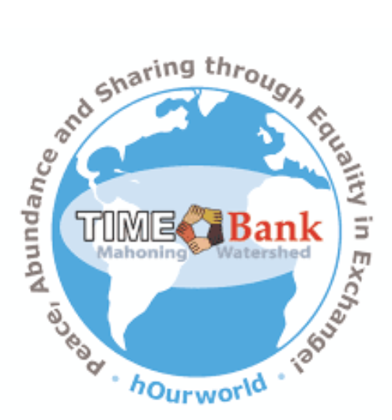
Hourworld is an international network of over 40,000 members of “neighbors helping neighbors”. All hours banked are considered equal, irrespective of the complexity of the task. One can pick from 360 communities around the globe and list what they have to offer and what they would like to receive in return. A time-credit earned for doing a particular task can be used to request a task from any member of the community.
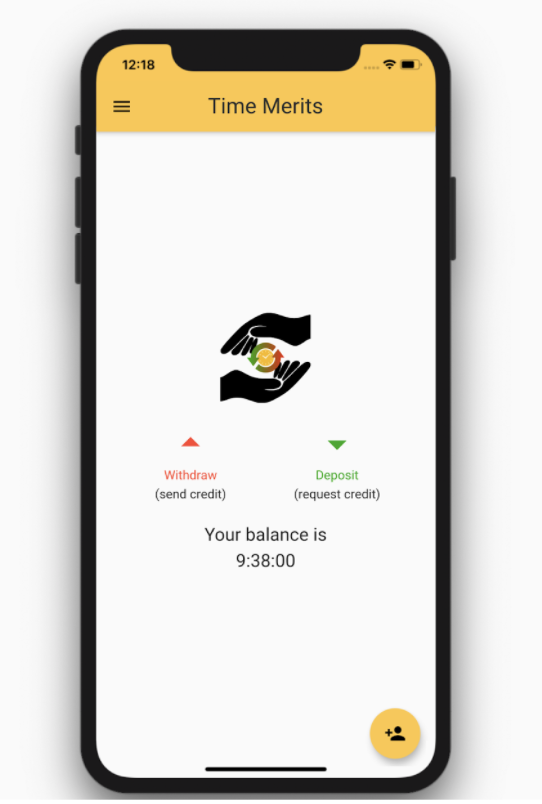
Time Merits requires a log in for users to be able to use the time banking product. The UI is very intuitive. It is simple, so much so that it looks a little unsophisticated, as if it was the first project of an aspiring developer. The app calculates your balance in time instead of money. On the home page, you can view your balance, and you can withdraw or deposit from other users by scanning their QR code. While this ensures that the app documents the correct user transactions, this is an impediment for people who want to transfer time from a distance (it doesn’t let you upload screenshots of a QR code, either). One feature this app does not include is a way to find nearby users. You can only use this app with people you know personally, but if you wanted to look up a particular service to share or request in your area (or beyond), the app would not be able to perform this task.
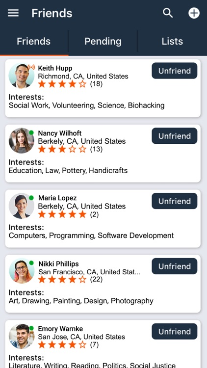
Timekeeper Bank is an app particularly centered around using GPS so that users can browse other users based on proximity; then they can exchange services and requests locally. The app states: “offer your experience and knowledge to other members in the network”. On the “Market” page, a map is shown with nearby points showing where other members are, and there are three tabs: “People”, “Requests”, and “Services”. The app has notifications and reminders and the ability to schedule a trade with another member. Automatic transaction occurs. For the user profile, each person has a rating out of 5 stars that is shown. They advertise the app as more of a way to foster personal and community growth and be a part of something enriching.
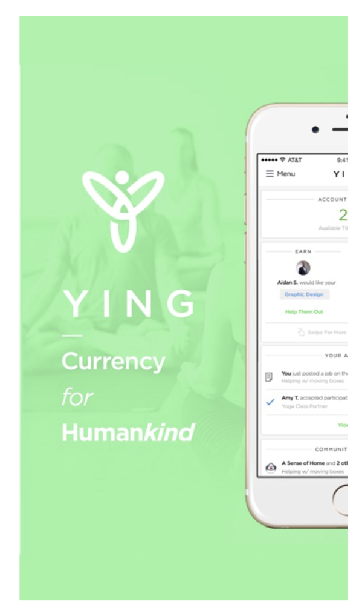
Coining themselves as the “currency for humankind”, YING brands themselves as a way of fostering social interactions while boosting personal endeavors. In order to access the app, you need to become a member of a community within the YING platform. They emphasize how they provide a platform where people do not need cash to get what they need. They label themselves as a means of “expanding capitalism”, perhaps to avoid promoting communist or socialist beliefs that the time banking concept has roots in. Something that makes this unique and perhaps more developed than other time banking apps is that you must have a membership with payments that are monthly or annual.
Domain Research Interviews
We spoke to several people about their thoughts on timebanking using this protocol.
Key Findings
- There seemed to be uncertainty about the time-credit system because different tasks have different complexities which cannot be measured just in terms of hours required.
- A problem lots of people brought up was trust/selfishness, etc. People may not trust strangers to complete tasks well unless they have some common group they’re in.
- People seemed willing to ask for help in areas where they weren’t experts
Insightful Quotes from Interviewees
Q: Have you ever wanted to get a service in exchange for something other than money?“The lady who gave me a facial told me she really wishes she could take one of my water aerobics class and I joke that I’d give her a free class if she did my brows for free.”Q: Within what communities that you are a part of do you think time banking would be useful?
“Let’s say there’s a career fair - an alumn or someone who has interned at that firm gives you advice about it. Then you want to do the same for others once you’re the one able to give career advice. You were given an hour of advice, now you have that hour to give to someone else, or back to that person.”Q: Do you see any potential problem with this system of time banking?
"Uniformity, hard to set a united effort - ideally you’d want everyone to put in the same effort but people are selfish.""
Deciding on the Setting for Our Timeshare App
We thought a way to combat issues that we discovered through our research is creating an app for an existing regulated community rather than mere strangers on the internet.
Informed by our research, we decided that college is the perfect setting for a timeshare app. It gives it more of a centered focus with an audience that doesn’t have enough disposable income to just pay for a service. We imagined a platform to share more than just tools, but advice and experience too. Some people interviewed mention a positive thing about their community is how they have older people who have advice for them as they go through things, and vise versa, so we could have an app that fosters that positive aspect of community. Specific examples of potential timeshare activities on this app include tutoring, giving certain supplies like trading old textbooks, or even an hour of career advice.
Domain Research Synthesis
To better understand our users and their needs, we created personas for our users and stakeholders based off of our domain research findings. This was followed by drafting scenarios for our users and developing journey maps to identify pain points. These would serve as areas that our application could address.
User Persona: Chris
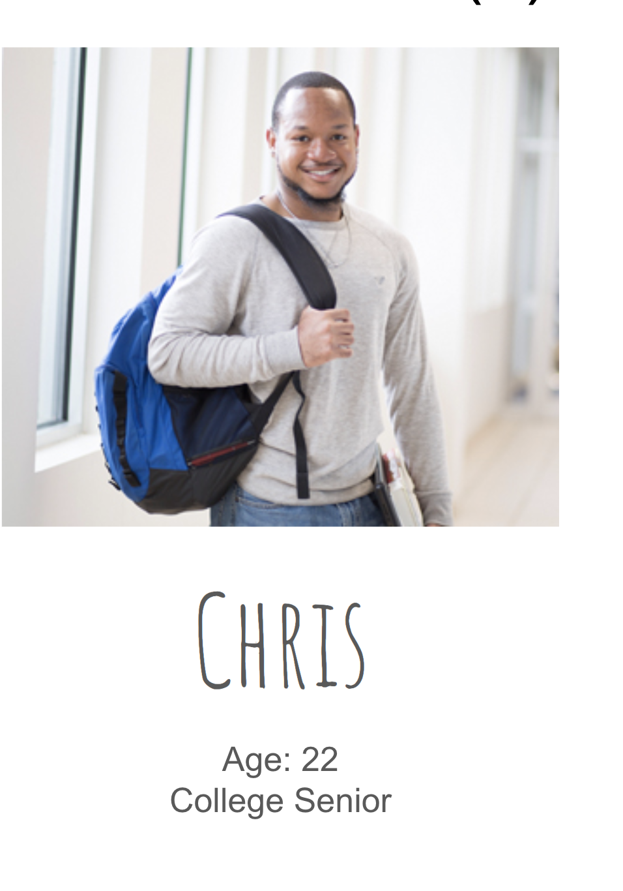Chris is a senior in his last semester at Carnegie Mellon. He’s a lover of football, theater, big dogs, and good food. As a senior, he eats out often due to his lack of a meal plan, and while he loves the food that Pittsburgh has to offer, he’s very aware of the hole it puts in his wallet. Chris is excited for his post-graduation plans to work as a consultant at McKinsey. Since his last semester is going to be laid back, he is interested in serving as a mentor to any underclassmen who need help or advice. Moreover, he has a lot of textbooks from his seven previous semesters at CMU, and is interested in giving them away.
End Goals: To have a rewarding last semester at CMU and feel a sense of giving back to the CMU community; to meet new friends and spend quality time with old friends before moving on to the next chapter of his life.
Life Goals: To have a stable career and, eventually, a wife and two kids somewhere in the suburbs.
Chris's Scenario
How might we help Chris get rid of his old textbooks while also providing him with delicious brownies?
Chris is tired of seeing his pile of old textbooks he hasn’t used in years every time he enters his apartment. He knows in theory that he can sell them, but doesn’t really understand how the process works. Instead, he opens our app and finds that several freshmen are in need of some of the textbooks he has. He finds one freshman named Janie particularly interesting; she needs 3 of his 5 textbooks and is skilled at baking brownies. Chris messages Janie on the app and they both agree that each textbook is worth a batch of fresh baked brownies. Chris gets rid of the majority of his textbooks and the burden that comes with them, and enjoys the delicious brownies with all of his friends.
Chris's Journey Map
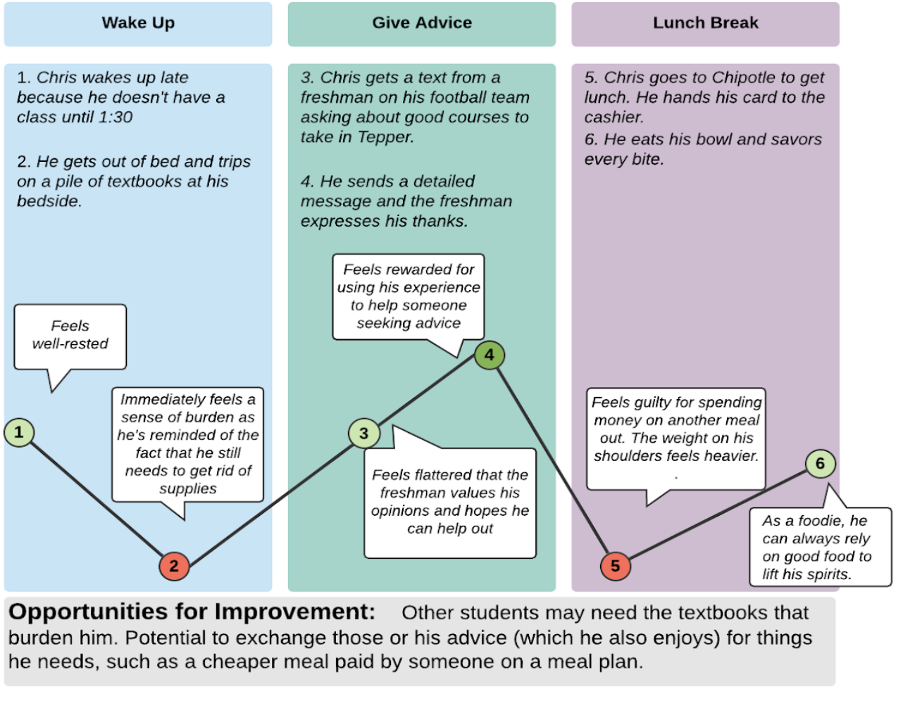
User Persona: Emily
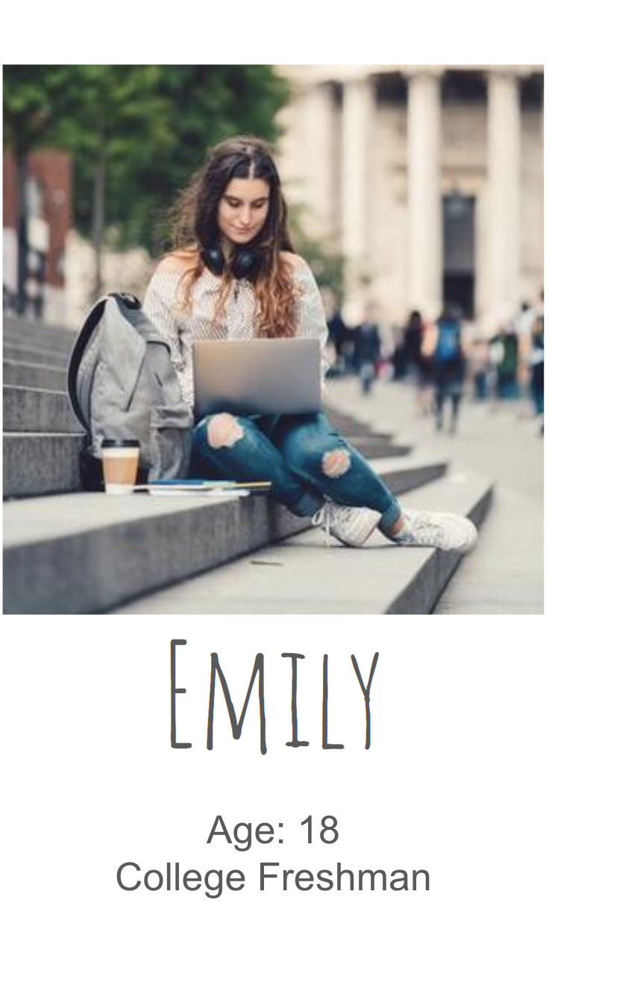Emily just started at Carnegie Mellon a few months ago. She’s an avid photographer and loves capturing and editing photographs in her free time. She plans to major in Computer Science but is currently having a hard time coping with those subjects as she didn’t study code in High School. There are many students in the class so she isn’t able to get enough individual attention from the professor either. She knows that there are probably many students on campus who would be willing to help her but she doesn’t know how to connect with them.
End Goals: To get through the semester with good grades and a sound understanding of her courses.
Life Goals: To start a digital design and branding agency of her own a few years after graduation.
Emily's Scenario
How might we help Emily get the guidance she needs in a way that allows her to leverage her existing skills?
Emily has recently started school at CMU and is finding her Computer Science classes really difficult to cope with. She has the option of going to her professor, but she can’t do that every time because there are many other students in the class who also require the professor's guidance. She is sure that there will be people on campus who can help her because of CMU’s strong CS culture, but doesn’t know how to find someone who will have the time to spare. On the app, she finds two juniors willing to provide CS tutorials. One of them, Mateo, was looking for a photographer to take pictures at a club event that he was hosting - this matched what Emily could offer, given her passion for photography. She gets in touch with Mateo and they agree on two CS tutorials in exchange for event photography, and now feels comfortable to even reach out to him again for continuous exchanges if needed. She feels more confident going into her exam, rewarded for getting to use her photography skills, and more connected to the community, as she is a new freshman and normally wouldn’t meet Mateo in her normal circles.
Emily's Journey Map
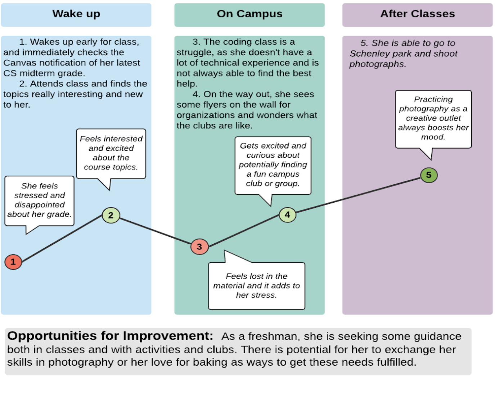
Stakeholder Persona
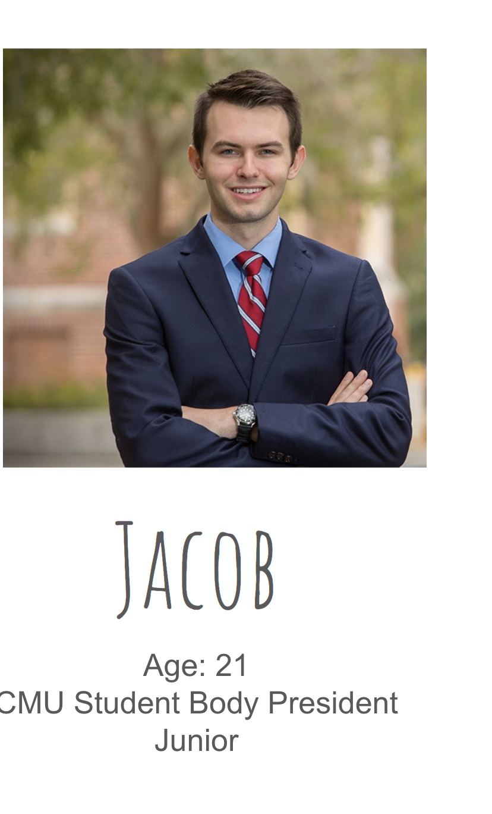As Student Body President, Jacob is still a pretty mellow person, but is vocal in what he feels passionate about. He is a Business Major with a minor in International Relations. On the weekend he likes to explore new restaurants in Pittsburgh, although it can be hard to find time. He fills up his schedules front to back, whether it be frequent lunch meetings, career fairs, or regular executive board duties. Lately, students have voiced to him that they don’t always know exactly where to go to when they want to get or give something, whether that be career advice, finding clubs, tutors, or textbooks. He hopes to find an innovative way to build bridges in the CMU community as well as help students have access to many tools, despite their financial abilities.
End Goals: Help create a more connected CMU student body, and make sure all of the students have access to resources they both need and want during their time there.
Life Goals: Live in a bigger city, while pursuing a career in the non-profit sector or within the government.
Prototypes
Prototype #1: Low Fidelity
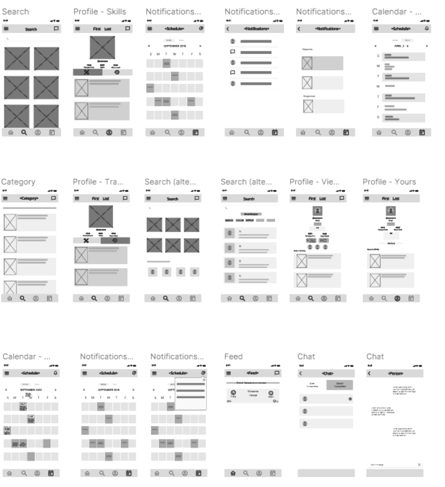
Navbar
The foundation of the app is the navigation bar at the bottom of the screen which can be used to quickly shift between different functional centers of the app. The selected tab is indicated by a color darker than the rest.
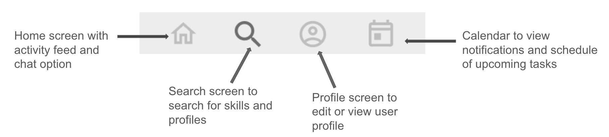
Feed and Chat
The “home screen” features a feed that displays recent transactions among people on campus. It also leads to a chat page where one can view conversations for open and closed transactions.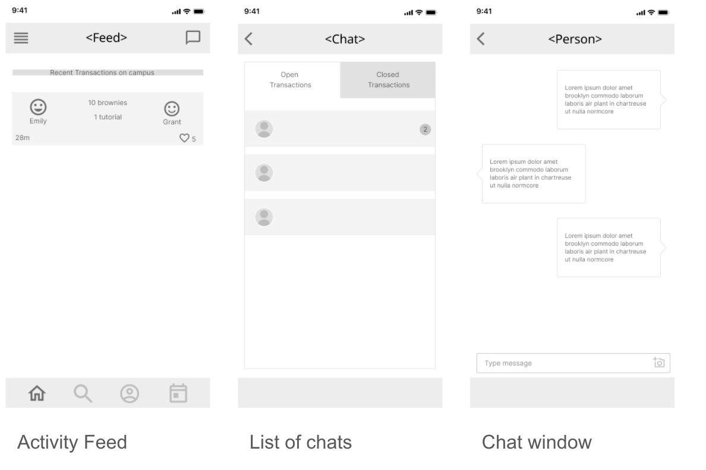
Search
We created multiple iterations of search screens to direct search results from an overarching category towards a more specific search result.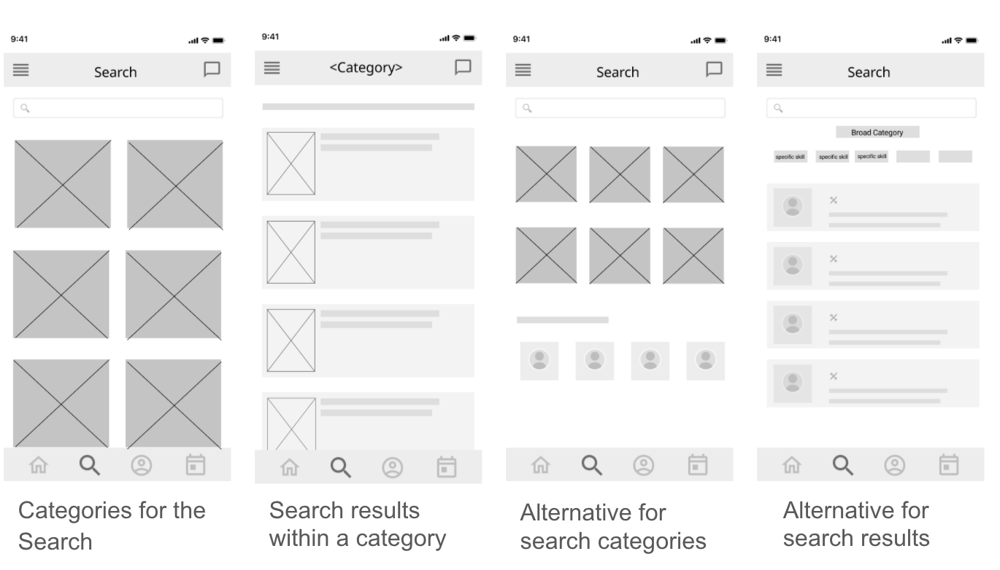
Profiles
We created profile views for both your “own” profile as well as viewing someone else’s.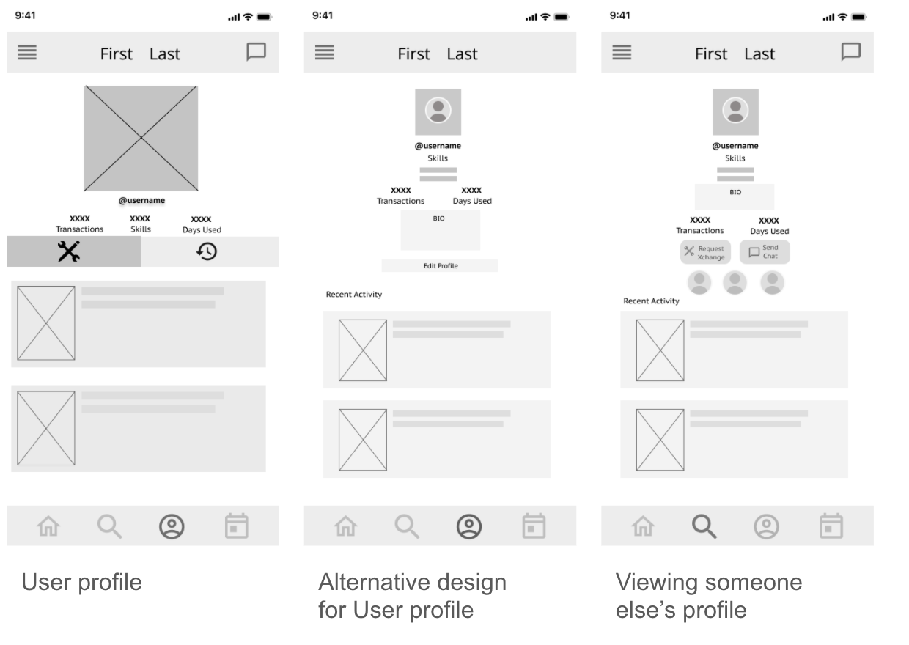
Calendar
We created a monthly and a weekly view of the calendar for the user to view their upcoming exchanges. A bell in the top right leads to new notifications. 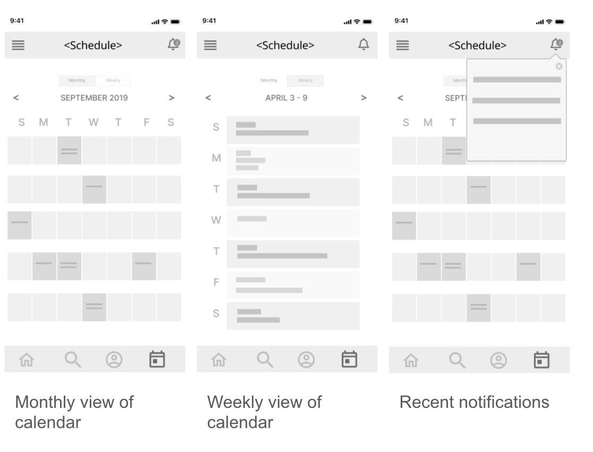
Notifications
The notifications, embedded in the calendar tab shows the user new requests, new messages, and any other activity that is important for them to take note of. 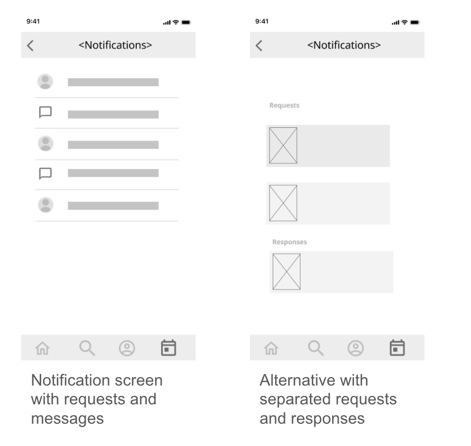
Prototype #2: Mid Fidelity
Search
We made the search process clearer by adding specific categories and search options, as well as the ability to view “real” profiles in search results.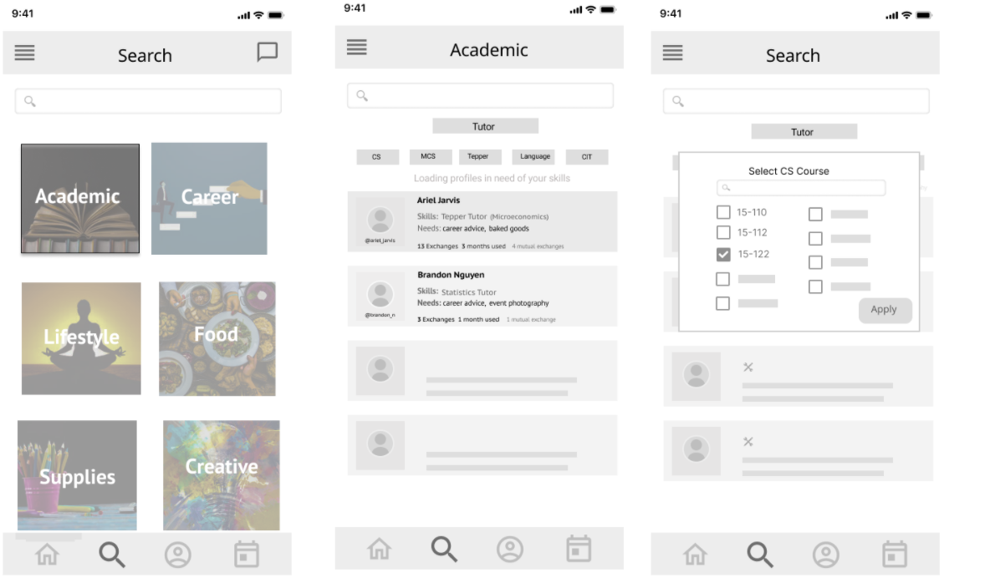
Requesting an Exchange
We detailed the profile by showing a short bio, recent transactions and a pop up menu for requesting the transaction.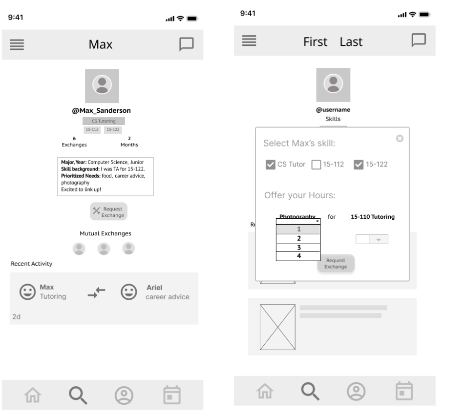
Chat and Feed
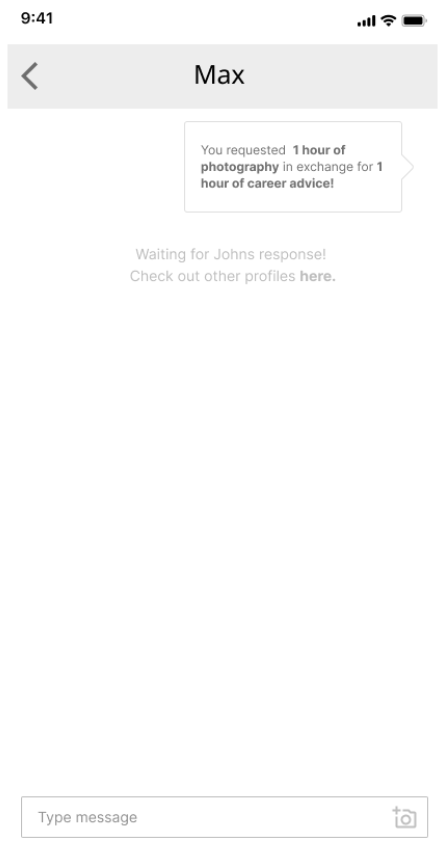 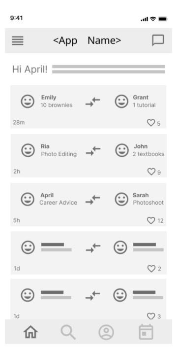Chat - An automated message is sent to the user that you request a transaction from, after which they can accept or reject your request
Activity Feed - The activity feed shows recent transactions on campus with the option to “like” a transaction to facilitate community engagement
Testing the Prototype
At this point, we began conducting user testing on the mid fidelity prototypes. For more information on our protocol and findings, click here. Studying the results of our user testing yielded the following points of action to be considered for the next iteration:- Eliminating the calendar feature and replacing the calendar tab with a separate tab for notifications.
- Shifting the chat feature from the home feed screen to the notifications tab.
- Adding updated needs and assets to the feed.
- Reducing the complexity of category hierarchy in the search and implementing assisted search instead.
- Indicating when a particular profile is a “perfect match”
- Detailing the notifications tab with buttons to quickly view details about a particular notification.
- Making the “request” button more prominent.
- And lastly, transitioning from black and white to colour.
Prototype #3: Mid Fidelity w/ Color
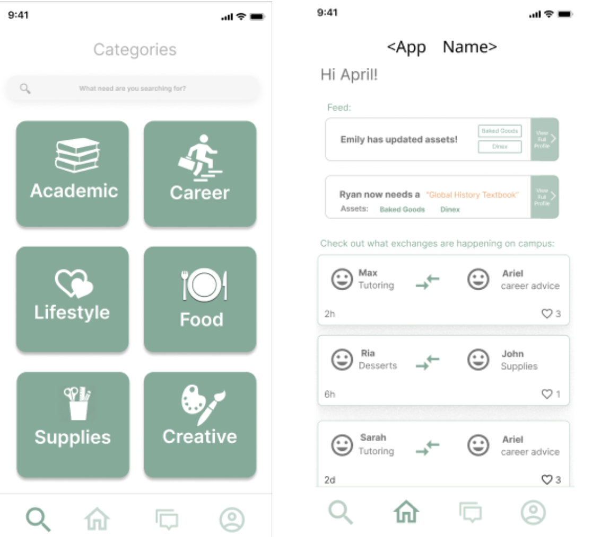In this next iteration, we increased the fidelity, made decisions with regards to color schemes, and further capitalized on user testing to make significant UX changes.
We rearranged the ordering of the navigation tabs so that the home page is now the search, and the user clicks the next tab in order to reach the feed. This helps prioritize the main goal of our app: to guide students’ search for resources. This solves an issue found in user testing: users took a long time to find that they should go to next tab in the navigation bar in order to search, since the start page was the feed.
Color Scheme
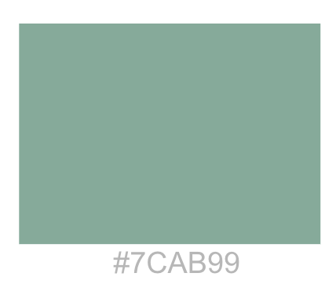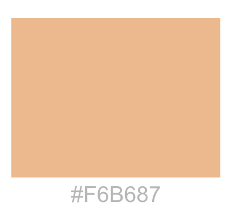Our aim was to display a fresh, youthful and approachable interface, while still having a sense of sophistication, and without being too bright and overpowering. From user testing, we found that the legibility of the screens worked well, as the screens were not overcrowded, so we aimed to keep this style and have a simple white background with hints of a brand color to highlight certain features. Our first thought was to search for something in the realm of blue or green, as these tend to exude the emotions we aim to convey. We wanted to use more muted values that were not too bright. Furthermore we did not want to choose a strong green, as that can symbolize money, which is not the focus of our app.
We decided on this blueish green color, and chose an orange with a similar value tone to use as the accent color. When implementing these into our app, the green color would display the assets that people have to offer, and the accent orange would display their needs.
Representing the Categories
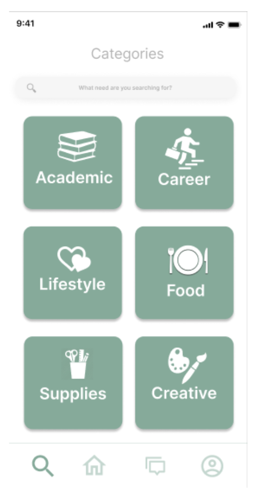
We chose to have a more abstract representation of the logos rather than previously used images in order to maintain a cohesive UI and also showcase the main color.
We chose these broad categories with guidance from user interviews. We took into account the resources that students said they would likely search for.
Furthermore, the search bar still remains at the top for a direct search option (of a profile or resource), in case a user doesn’t know which category a resource belongs to.
The categories act as a template and guide so people know the scope of the app.
Guided Search
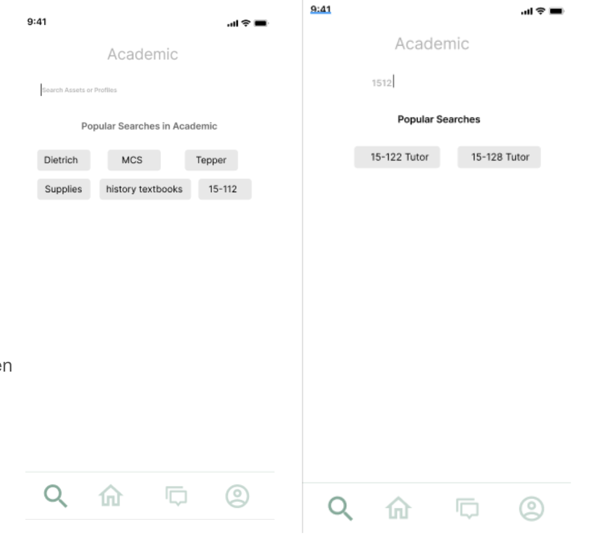
Something we debated was how to best guide the users into finding the specific resources they need. We toggle with the idea of having subset categories within each broad category, but one reason this couldn’t work is that many resources can belong to multiple categories, or none, etc.
As you type in the search bar, user-inputted tags appear, letting the user know what has already been put in the data-base
This helped with our problem of trying to help the user search “correctly” i.e. not type in 15-122 when perhaps another user called it something else.
Displaying Profiles
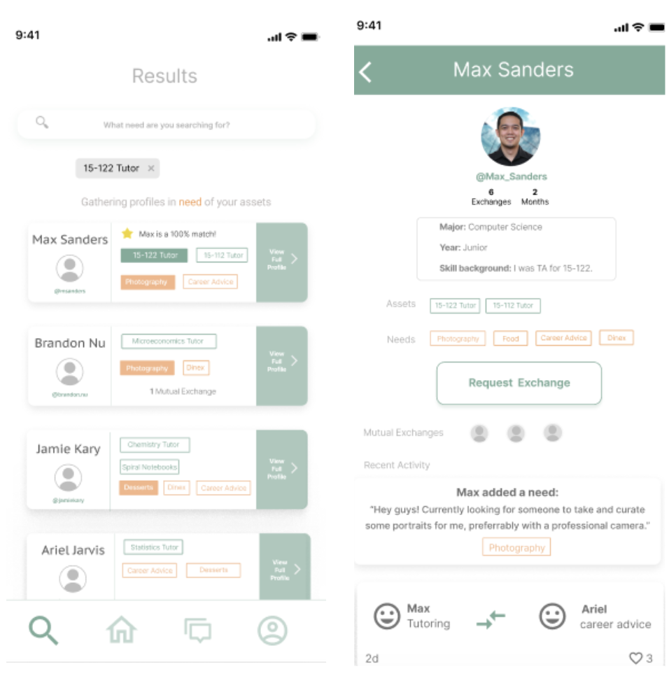 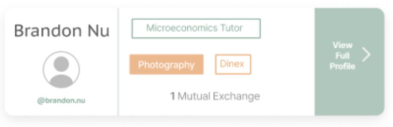 We aimed to use colors to display assets and needs and avoid using too much text. We display the needs and skills color coordinated, and they appear bolded if it is matches your search. Further, we display profiles prioritized by a matching need to skill basis first, so that users can feel confident that they can provide value to the person they request. Finally, we display a large “view profile” CTA, as this leads the user to be able to eventually send a request and interact
In-App Exchanges
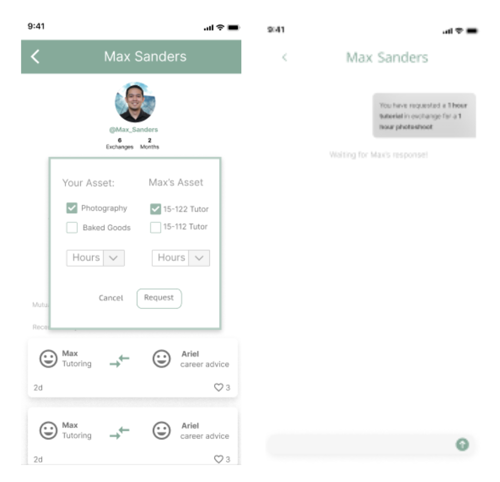 Upon clicking "Request Exchange" on someone’s profile page, the user selects which assets they’d like to exchange, and how much of each. Upon requesting, an automated message is sent, in order to initiate the conversation to be had if the request is accepted.
Managing Exchanges
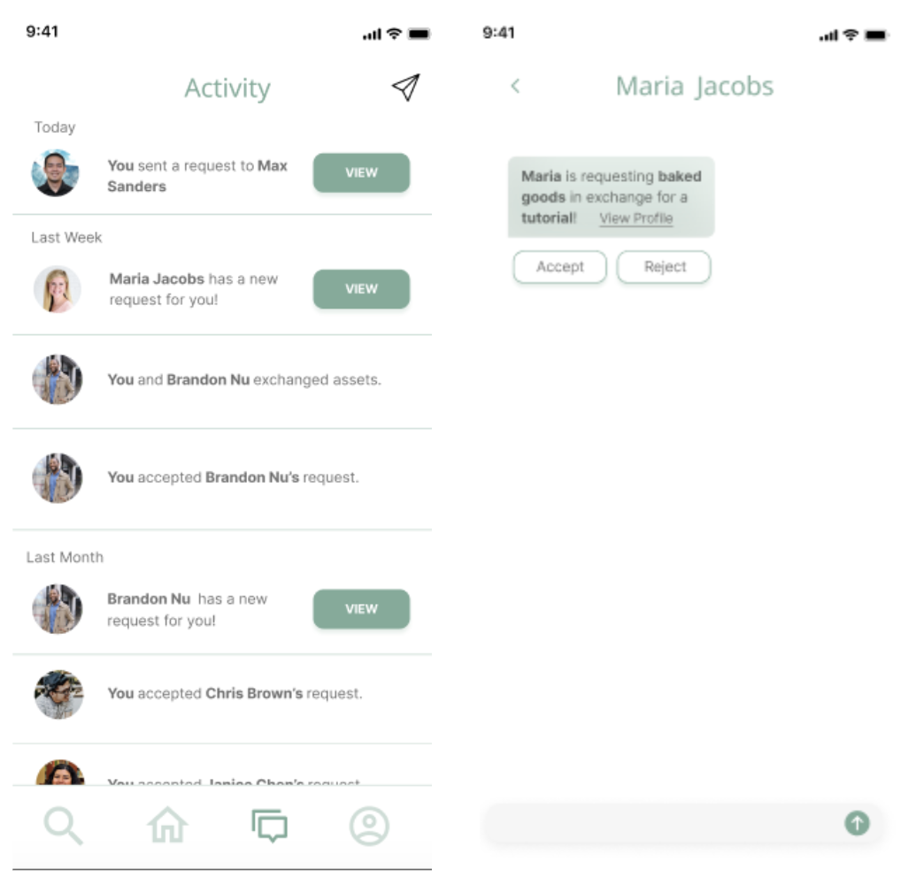
Instead of having an in app calendar, we realized that most users put things in their own calendar.
We still felt it was necessary to have one tab dedicated to keeping track of your own activity and paired this with an in-app chat feature. New requests show up as messages in the Activity tab.
Other Small Changes
- We moved the hamburger menu to just be within your own profile tab. It is not needed on the front page, as some users thought it was a menu that could aid in searching, but really it would just contain privacy settings, push notification settings, etc.
- We changed the phrasing from “skill” to “asset” because this app allows people to also offer what they have (such as supplies, textbooks, etc.) and is not limited to just skills.
User Testing Round 2
We then conducted a second round of user testing on Prototype #3 (more info here). Our key takeaways were as follows:Things that Worked for the User
- Categories helps them structure the idea of the help you need
- See what other users are exchanging in the feed helps them gauge if what they have to offer makes sense and has value
- The personal activity feed where you can see exactly what you did, like a personal receipt
- The color and layout were visibly pleasing and legible
- Displaying “needs” in a different color was helpful in distinguishing
- Change the color of the “view” button to let the user know it has already been clicked or has not been viewed yet
- Make the green “View profile >” on the profile card more bold
- Implement a “complete transaction” button to put your transaction in your closed transaction history
- Make the tags, font, etc. on the profile page bigger
- Come up with a name!
- Change the “home” icon as that screen wasn’t actually the home screen so it was misleading for our users
Prototype #4: High Fidelity Color Screens
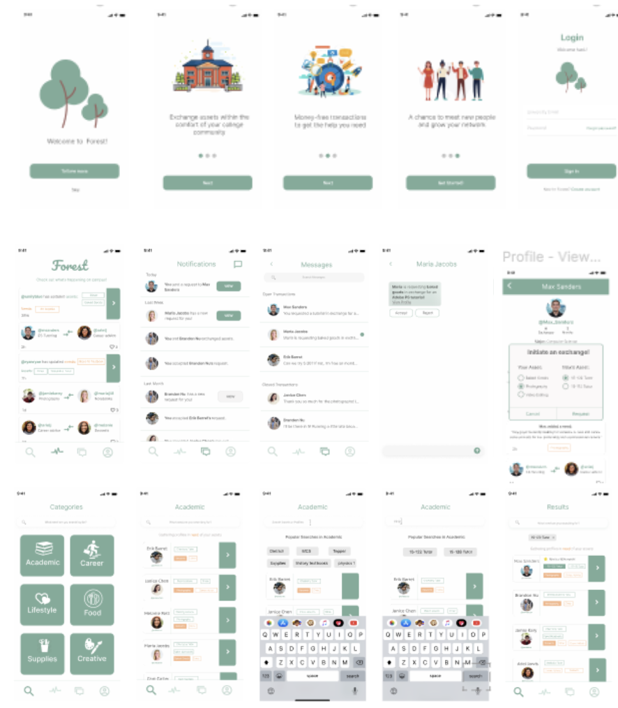
Application Name and Branding
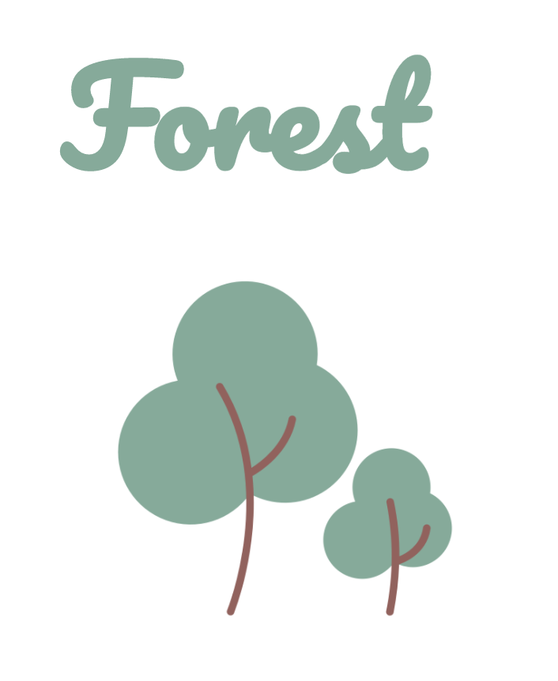
While deciding on a name required much brainstorming, we felt it was a necessary step in the process. With our app, we aim to create a space where a wide mix of resources in a community can be found in one place.
We wanted to find one word that captures this idea.
A forest is associated with growth and abundance, and and is home to a variety of unique resources all residing in one environment.
As CMU students, we witness daily how unique our peers are, and how each person has much to offer. In our app, everyone has something valuable to offer to this collaborative community. Furthermore, everyone is always looking for opportunities to expand their network and grow.
Subtle Changes
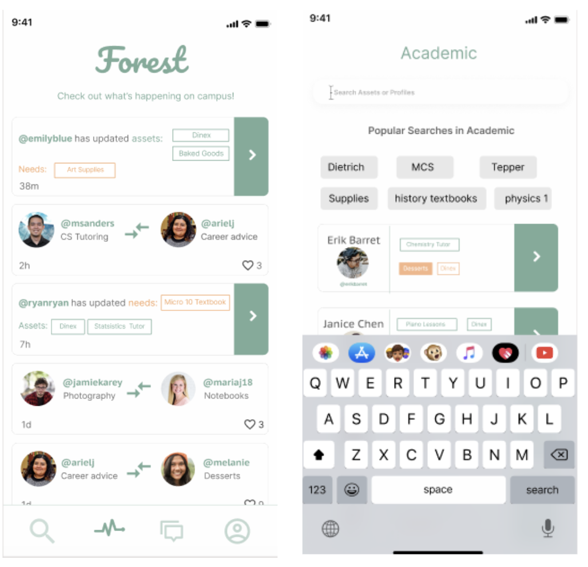For the final prototype, the background is slightly more gray, a subtle difference that helps create a more polished look.
Additionally, note that the feed is now chronological, rather than having one section for updated needs/assets and another for activity between users on the app.
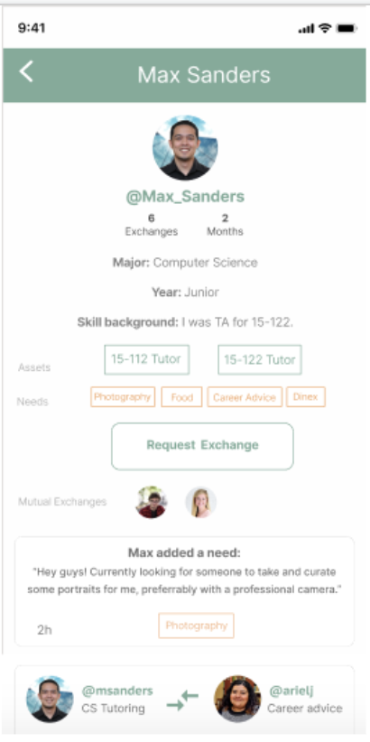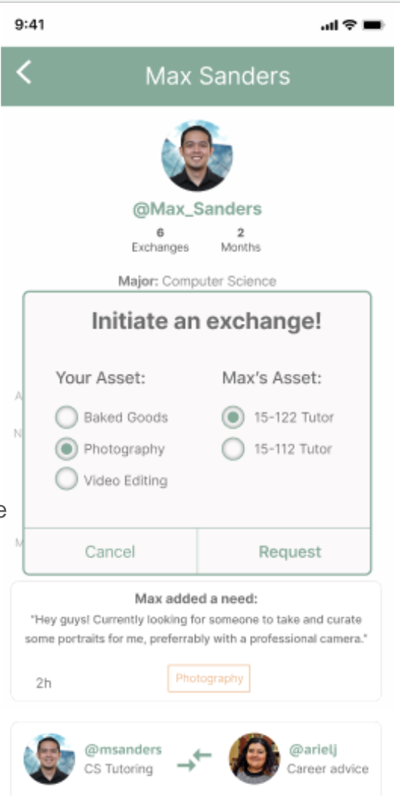
In response to testing feedback, we incrased the size of information displayed in the profile page. We also included scroll functionality for the profile page, which can be observed here.
Further, we made the request popup more compatible with iOS and removed the selecting hours function, as some assets are measured differently, and this detail can be discussed within the chat.
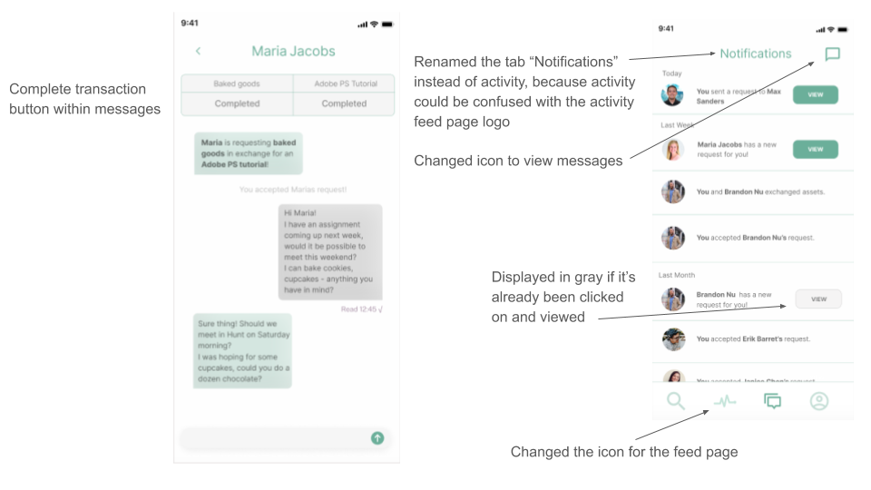
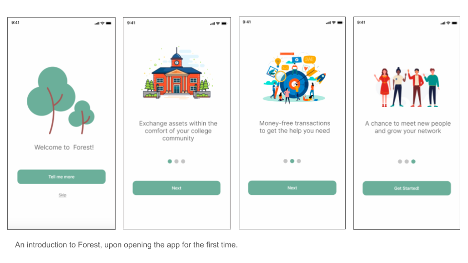
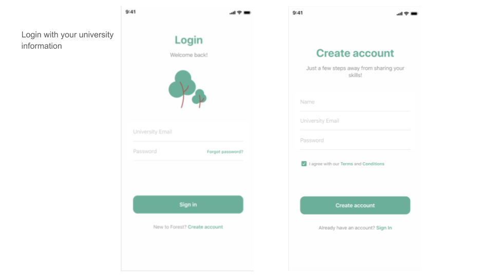
Post-Pitch Insights
After pitching our product to our teachers and peers, we received positive feedback on the branding, explanation of name, and aesthetic/color choices. The following list includes both positive and constructive feedback we consider useful when further improving the design.- "Make requests you sent and requests you receive be more visually distinct in the notifications tab"
- "Students can see themselves using this and finding it practical and really good for new students or maybe less extroverted students."
- "The green arrow for each person is a little distracting. Perhaps use more color in place of words in certain parts."
- "I like the simplicity, some tags are small and harder to read."
- "Like that it is an exchange without credits because it makes it not just a one way exchange."
- "Current activities feature is essential, and the colors are very neutral and soft and easy on the eyes which is important for an app like this which you would use quite often."
Reflections
We learned tons from this project, but one of our key takeaways is the relevance of design trade-offs. We realize that a perfect match (as in the case of the prototype) is not always going to exist. In general, users may still request someone that doesn’t have the need matching their skills. The messaging feature helps with this. Users can send a message in the chat to offer and discuss alternatives. We found through our research that people still find it rewarding to help each other even if they don’t get something essential in return.With the introduction of remote online collaboration, we had to adjust to working virtually. Not having the benefits of the natural back and forth of an in-person working team, such as being able to flesh out ideas on paper in front of one another was something we realized we had to adjust to. For instance, some of us prefer hand sketching in front of one another to illustrate our creative ideas. Overall we enjoyed finding new ways to achieve this through Zoom, and worked well despite having to adjust to different time zones.
Special thanks to Daisy Gollis and Anushri Gupta for being truly fantastic people to work with!